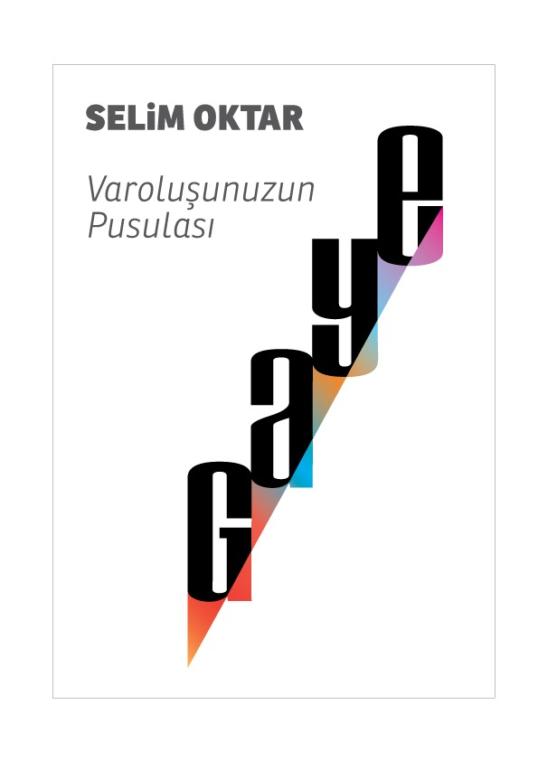
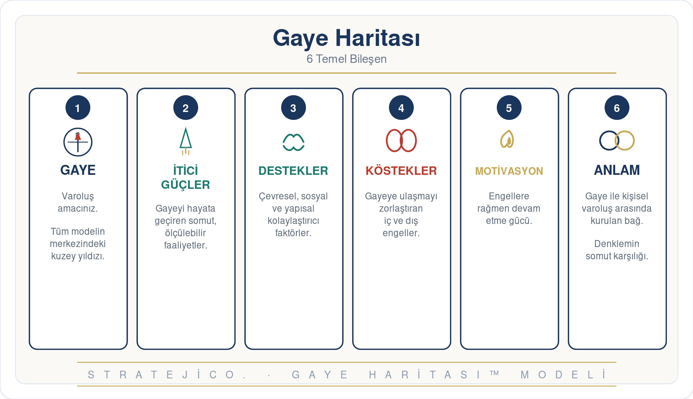
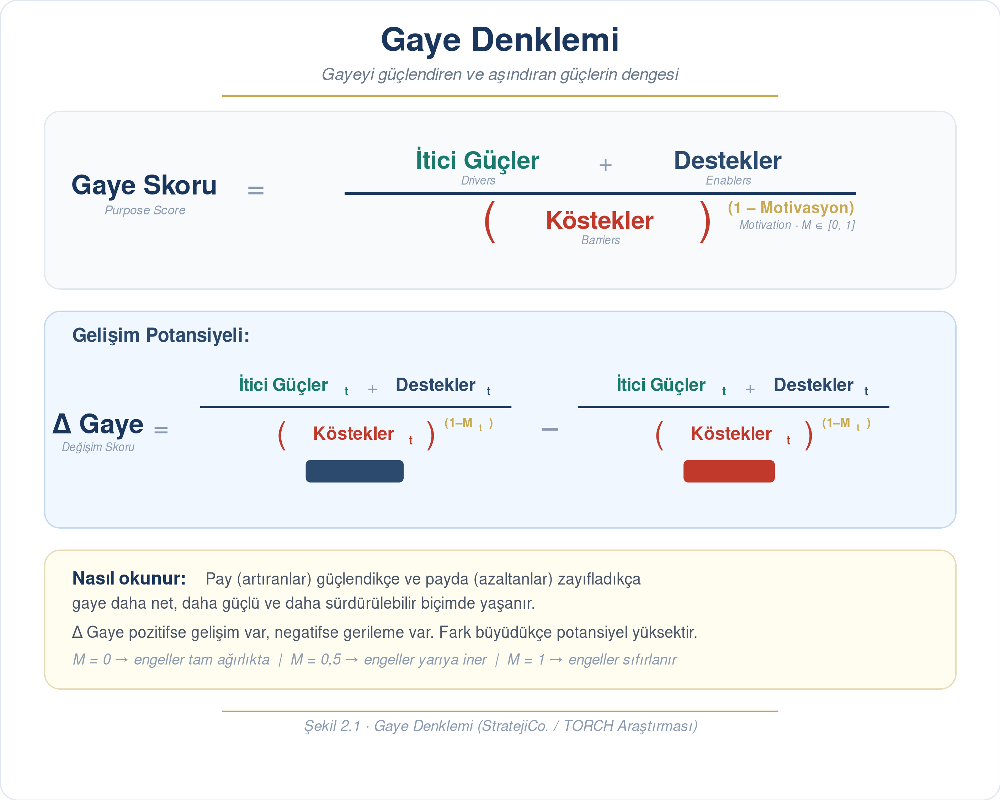
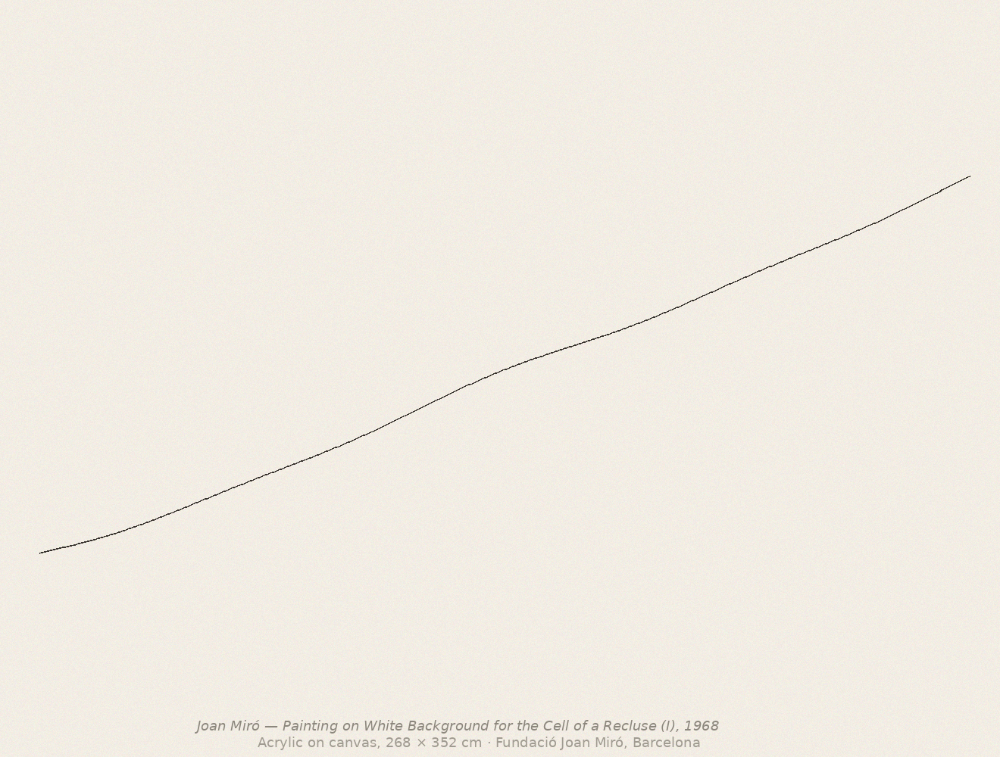

Gaye, anlatılan bir hikâye değil; her gün verdiğin kararların toplamı. Bu kitap, o kararların ardındaki pusulayı sana geri veriyor — ölçülebilen, geliştirilebilen, paylaşılabilen bir yapı olarak.

Gaye, bir kavram olarak değil, bir yöntem olarak çalışır. Üç farklı kapı, aynı pusulaya açılır.
Gaye Haritası, Gaye Denklemi, Gaye Pusulası ve Gaye-Angajman Matrisi: kitabın dört çerçevesini bütünüyle gör.
Modeli incele →BGS Formundaki 12 soru ve dört bileşen — bugünkü ve bir yıl sonraki potansiyelinle birlikte canlı skor.
Hesaplayıcıyı aç →755 kayıtlık saha verisi, sektör profilleri, Türkiye'den iş modeli örnekleri ve kurumsal pusula.
Kurumsal sayfa →Kitap, gayeyi ölçülebilir kılan bir denklem önerir. Pay, seni ileri taşıyan güçler; payda, önündeki engeller; üzeri, motivasyonun. Üçü birden, gayenin günlük tezahürünü oluşturur.
BGS Formundaki gerçek soruları yanıtla, dört bileşeni puanla, bugünkü skorunla bir yıl sonraki potansiyelini yan yana gör.
Gaye Skorumu HesaplaKitap, gayeyi tek bir tanıma sıkıştırmaz; onu farklı açılardan görmemizi sağlayan dört çerçeve sunar. Hepsi birbirinden beslenir: Gaye Haritası bileşenleri verir, Denklem onları birleştirir, Pusula yönü gösterir, Matris ise gaye-angajman dengesini fotoğraflar.
Gaye, soyut bir kavram değil; altı somut bileşenden oluşan bir harita. Girdi (Gaye), modülatör (Motivasyon), bileşenler (İtici Güçler, Destekler, Köstekler) ve çıktı (Anlam) — birlikte gayenin nasıl tezahür ettiğini gösterirler.

"Neden varım?" sorusunun cevabı. Zamansız varoluş nedeni — modelin girdisi.
Gayeyi eyleme dönüştüren faaliyetler. "Ne yapıyorum?" sorusunun karşılığı.
Gayeyi kolaylaştıran çevresel, sosyal, yapısal faktörler. (Eski terim: Kolaylaştırıcılar)
İçsel ve dışsal engeller. Gayeye giden yolu tıkayan iç ve dış kuvvetler.
0–1 arası tek skor. Genel dayanıklılık düzeyi — Köstekleri yumuşatan modülatör.
Gayenin somut karşılığı. Kişiyle ya da kurumla kurulan bağ — modelin çıktısı.
Eski formülde İtici Güçler ve Motivatörler arasında ciddi bir örtüşme vardı (saha verisinde Pearson r=0.885 — neredeyse aynı şeyi iki kez ölçüyordu). Yeni formül bu çift sayımı çözer: Motivasyon, kösteklerin etkisini modüle eden bir üs olarak modele girer.
Filiz
Gelişen
Güçlü
Çok Güçlü

Pusulada her katman, bir üstündekinden meşruiyetini alır. En iç katman (Gaye) kuzey yıldızıdır; dışa doğru gidildikçe katmanlar daha somut ve daha değişken olur. Bütünleşik Çerçeve, Bölüm 5.6'da bu dört katmanın nasıl birbirine bağlandığını anlatır.
"Neden varım?" Proje-bağımsız, on yıl sonra da geçerli. Tek cümle, en fazla iki.
Pusulaya yön veren içsel ilkeler. 5–7 değer. Kararlarda manyetik kuzey gibi çalışır.
5–10 yıllık ideal gelecek. "Gayem gerçekleşse dünya nasıl görünürdü?" sorusunun cevabı.
Bugünkü somut adımlar, projeler, roller. En değişken katman — ama üstle uyumlu olmalı.
Çalışmak ile anlamak farklı şeylerdir. Birinin çok çalıştığı her zaman doğru yere gittiği anlamına gelmez. Bölüm 7'nin matrisi, iki ekseni kesiştirir: Angajman (ne kadar bağlısın?) ve Gaye Birlikteliği (bu bağlılık nereden geliyor?). Her birey, her ekip, her kurum bu dört kadrandan birinde durur — ve haritadaki yeri zamanla değişir.
Enerji yüksek, yön belirsiz. Çok çalışıyor — ama anlam haritasıyla hizalı değil. Tükenmişliğin yatağı.
Anlam ve bağlılık birlikte. İdeal konum — sürdürmek, yaymak, başkalarına da göstermek.
Ne anlam, ne enerji. Yabancılaşmanın bölgesi. Buradan çıkış için önce gaye, sonra angajman.
Anlama inanır, hareket etmez. Niyet kadar çaba, eylem kadar irade gerek.
"Gaye, çalışmaktan değil; çalışmanın nereye gittiğinden anlaşılır. Matristeki yerin, bu sorunun bir günkü cevabıdır — ama yarınki cevap senin elinde."
— Gayeni Bul, Bölüm 7
Bir hikâye katmanı, bir yöntem katmanı. Yedi bölümde gayenin tanımından, kişisel pusulaya, oradan kurumsal yansımaya uzanan bütün bir yolculuk.
"Ne yapıyorum ben?" Bu soru, çoğumuzun zihninde gezinen bir arızalı düşüncedir. Sabah üçte uyandırır, takvime bakarken kıpırdar, kalabalık bir toplantıda kulağa fısıldar. Çoğu zaman bastırırız; çoğu zaman çabuk geçer. Ama dönüp dönüp gelir.
Selim Oktar, çeyrek asır boyunca bu soruyu hem kendinde hem sahada izledi. Anadolu Sigorta'dan EY'ye, Ankara Patent'ten ÇCSİB sektörlerine uzanan 755 kayıtlık bir araştırma yürüttü. Vardığı sonuç şuydu: "Ne yapıyorum?" sorusu küçük değildir; yöntemsiz cevaplandığında insanı tüketir.
Gayeni Bul, bu soruya bir cevap dayatmaz; bir yöntem inşa eder. Gayeyi haritalandıran, ölçen, hizalayan, geliştirilebilir kılan dört çerçeve. Bireysel pusulanı kurarken kullanırsın — ekibinle gayeyi konuşturmak istediğinde aynı çerçeveyi kurumsal düzleme taşırsın.
Hikâye katmanı, modern dünyanın kavşaklarında gayeyi arayan bir yolculuğun peşinden gider. Yöntem katmanı, her bölümün sonunda seni durdurup pratik adımlara çağırır. İkisi birlikte okunmak için yazıldı: birini bırakırsan diğeri eksik kalır.
Çeyrek asırdır gayeyi araştıran araştırmacı, danışman ve yazar. Saha çalışmalarıyla, atölye deneyimleriyle ve kendi entelektüel yolculuğuyla Gaye Modeli'nin temellerini attı.
Gayeni Bul, Selim Oktar'ın 25 yıllık araştırmasının damıtıldığı bir kitap. Anadolu Sigorta'dan EY'ye, ÇCSİB sektörlerinden Ankara Patent'e uzanan saha çalışmalarıyla 755 kayıtlık bir veritabanı oluşturdu; bu verilerin üzerine dört çerçeveli Gaye Modeli'ni inşa etti.
Kitap, akademik bir öneri olarak değil; sahada test edilmiş, kavramsal olarak rafine edilmiş, bireysel ve kurumsal düzeyde uygulanabilir bir yöntem olarak okuyucuya sunuluyor. Selim Oktar'ın asıl amacı, gayeyi soyut bir kavramdan çıkarıp her gün karar veren insanın elinde bir araca dönüştürmek.
"Gaye anlatılan bir hikâye değil; her gün verdiğin kararların toplamıdır."
Kitabın 2.4 bölümündeki "Bugün ve Gelecek" mantığıyla çalışan canlı hesaplayıcı. Dört bileşenin her biri için üç açık uçlu soruyu yanıtla, bugünkü düzeyini ve bir yıl sonraki potansiyelini puanla — skorun, yorumun ve gelişim potansiyelin anlık güncellenir.
Soruları yanıtlarken aklından geçenleri yaz; ardından düzeyini ve potansiyelini puanla. Tüm hesaplamalar canlı.
Para, statü ya da zorunluluk olmasa bile devam edeceğin işler. Tutkun, merakın, içsel motivasyonların.
Çevresel, sosyal, yapısal kolaylaştırıcılar: beceriler, kaynaklar, ilişkiler, teknoloji.
İç ve dış engeller. Korkular, alışkanlıklar, çevresel kısıtlar.
Engelleri aşmanı sağlayan genel dayanıklılık. Engele özel değil, genel motivasyon düzeyi (0–10 puanlanır, formülde 0–1'e normalize edilir).
Kurumsal lider için Gaye Modeli, Miró'nun "Cell of a Recluse" metaforuyla üç sade ilkeye iniyor: Gaye (yön filtresi), Meta-Strateji (karar sadeleştirme), Bilgelik (uzun vadeli hüküm). Toplantıda, yönetim kurulunda, icra kararında doğrudan kullanılır.
Liderlik kararlarının üçte biri yön belirsizliğinden, üçte biri fazla unsurdan, üçte biri kısa-uzun vade tartışmasından sapar. Üç ilke bu üç düğümü doğrudan açar — Miró'nun "Cell of a Recluse" metaforuyla.

Joan Miró'nun 1968 tarihli üçlemesi, kurumsal liderin karar zihniyetine birebir oturuyor. Hücre — kararı dünyadan değil, fazlalıklardan arındıran iç oda. Beyaz alan — fazlalıklar çıkarıldığında geriye kalan saf zemin. Kırılgan çizgi — kısa vadenin görkemine değil, uzun vadenin sesine kulak veren hüküm.
Bu üç metafor; lider için disiplin, ekip için netlik, kurum için dayanıklılık üretir.
Gaye değildir:
Fazlalıklar:
Bilgelik karşıtı:
Bir karar, üç filtreden geçer. Hepsi onay verirse ilerlersin; bir tanesi takılırsa karar erkendir.
Bu karar, kurumun neden var olduğuna hizmet ediyor mu?
Gerçekten belirleyici 3 unsur ne? İtici – Köstek – Kaldıraç.
2–3 yıl sonra kimi güçlendiriyor, kimi zayıflatıyoruz?
Üçten fazla unsur sıralanıyorsa, henüz netlik yoktur. Üç işaret, kararın iskeletini verir; geri kalanı gürültüdür.
Kararı bir yöne çeken birincil kuvvet — pazar, teknoloji, regülasyon, müşteri.
Kararı zorlaştıran iç engel — kültür, yetkinlik, sistem, borç, bilgi açığı.
En küçük hamleyle en büyük etkiyi yaratacak nokta — orantısız etki.
Almak üzere olduğun bir kararı düşün. Aşağıdaki üç soruya yanıtla — birine bile "hayır" diyorsan karar revizyon ister.
Kurumsal ortamda en yaygın hata, meta-strateji yapılmadan doğrudan aksiyon toplantısına geçmek. Sonuç: çok iş, az etki, yorgun organizasyon.
Meta-strateji yapılmadan girişilen icra toplantıları:
Her büyük toplantıdan önce 10 dakika hücre zamanı:
Kitap, sahadan toplanmış 755 kayıtla kavramsal bir öneri değil; ampirik bir araştırma. 8 firmadan, 7 sektörden, hem özel sektörden hem birlik/derneklerden gelen veri Gaye Haritasını kalibre etti.
Anadolu Sigorta (234 kayıt) · TÜAD (97) · ÇCSİB-Cam (96) · Ankara Patent (76) · ÇCSİB-Seramik (75) · ÇCSİB-Çimento (69) · ERA (65) · EY (43)
Kitap, Gaye Odaklı İş Modelini dört farklı tipe ayırır: Gaye Örtüsü, Gaye Katmanı, Gaye Entegrasyonu ve Gaye Doğumlu Model. Türkiye'den dört örnek bu tipolojiyi somutlaştırır.
Kültür olarak iş — gayenin operasyonel modele en derin işlediği örnek. Bölüm 6.6'dan.
Kitleye ulaşan gaye — modelin sıfırdan gaye merkezinde inşa edildiği yapı.
Özgün gaye, özgün model — Türkiye'nin kopyala-yapıştır stratejiden çıkmasının canlı örneği.
Sahadaki gerçek: gayeyi ekosisteme yayan operasyonel ölçeğin canlı vakası.
Kitap kurumsal düzlemde dört kritik geçiş öneriyor: liderlik dönüşümü, gayenin strateji-yapı-kültüre yansıması, yönetişimde tutarlılık-ilke ekseni ve performans ölçümünde MPI.
Gaye, üçgen olarak kurumsal düzleme yansır. Bir köşe eksik kalırsa diğer ikisi de erir.
İyi ilkeler ile kötü ilkelerin ayrımı, tutarlılığın zaman boyutu, gaye odaklı yönetişim.
KPI: "Ne kadar ürettik?" MPI (Meaningful Performance Index): "Bu üretim kime ne kattı?"
Yarım günlük bir başlangıçtan, çeyrek yıllık bir dönüşüme kadar — şirketinin durumuna göre üç paket. Hepsi Gaye Modeli'nin dört çerçevesi üzerine kurulu.
Üst yönetim için karar disiplini girişi. Gaye–Meta-Strateji–Bilgelik üçlüsünü vakanız üzerinden uygulamalı çalışırız.
Şirketin gerçek gayesini ortaya çıkarmak ve onu strateji-yapı-kültür üçgenine işlemek için tam paket.
Yöneticilerini gaye taşıyıcısı liderlere dönüştüren, eyleme bağlı yapılandırılmış bir program.
Kurumsal Gaye Atölyesi sonrası hayata geçiş, üç eşit fazda yapılır. Her fazın sonunda somut bir çıktı vardır; üçü birden, gayenin günlük operasyona indiği tam bir uygulama döngüsüdür.
Şirketin mevcut karar zemininin fotoğrafını çekiyoruz. Tartışma değil, gözlem fazı.
Tanıyı çerçeveye dönüştürüyoruz. Gaye, Meta-Strateji ve Bilgelik şirketin diline geçiyor.
Çerçeve günlük operasyona iniyor. Toplantı, KPI, performans değerlendirme — hepsi yeniden hizalı.
Atölyeden manifesto belgelerine, toplantı şablonlarından MPI çerçevesine — sürecin sonunda şirketin yöneticisinin masasına gelen somut çıktıların listesi.
Kurumun "neden varız?" sorusunu tek cümlede yanıtlayan, 10 yıl sonra da geçerli olacak gaye ifadesi.
Gaye / Değerler / Vizyon / Misyon — birbirine bağlı, görsel olarak tek sayfada özetlenmiş kurumsal pusula.
Her büyük karar için Gaye → Meta-Strateji → Bilgelik filtresinden geçirme talimatı, tek sayfa.
İtici güç / Köstek / Kaldıraç çerçevesinde stratejik kararı sadeleştirmek için doldurulabilir şablon.
10 dakikalık hücre + ana gündem yapısı. Tüm üst düzey toplantılar bu çerçevede yürür.
"Ne kadar ürettik?" sorusundan "Bu üretim kime ne kattı?" sorusuna geçişin somut metrik haritası.
Üç ilkeyi standart hale getiren, her toplantıda kullanılan resmi gündem şablonu.
Şirketin tamamı ya da seçili birim için 4 kadran haritası ve aksiyon önerileri.
Üst yönetimde aynı ilkeyi farklı sorumluluklarla taşırsın. CEO için odak: yön ve karar disiplini. CHRO için odak: kültür ve insan tarafı. İkisi birlikte gayenin organizasyona inmesini garanti eder.
"Şirketin gayesini koruyan, kararı sadeleştiren, uzun vadeli hüküm veren kişi."
"Gayenin günlük davranışa, performansa ve kültüre indiği zemini kuran kişi."
Her yönetim kurulu toplantısının başına yerleşen 60 dakikalık standart gündem. Tüm kararlar bu üç filtreden geçer; toplantı sonunda her bölümün masada bıraktığı somut çıktı vardır.
İlk 30 dakikalık keşif görüşmesi ücretsiz. Şirketinin durumunu dinleriz, hangi paketin daha uygun olduğunu birlikte değerlendiririz.
Şirketinle gayeyi konuşalımOkur hikâyeleri, atölye buluşmaları, Selim Oktar yazıları ve podcast — kitabı okumakla başlayan, gayeyle hizalanmaya devam eden bir topluluk.
Okur hikâyeleri, etkinlik takvimi, podcast bölümleri ve Selim Oktar yazıları burada yayımlanacak. Doğrulanmış içerik geldikçe doldurulacak — uydurma içerik yer almayacak.
Hikâyeni paylaşmak ister misin?Bölüm 7.5, gaye-angajman matrisini beş gerçek hayat vakasıyla somutlaştırıyor.
"Geç kalmış" diye düşünen avukat. Yeniden hizalanma vakası.
Yön değiştiremeyen mühendis. Kadran II'den kadran I'e geçiş hikâyesi.
İkinci kuşağın sınavı. Kurumsal gaye devri ve yeniden tanımı.
Krizden sonra yeniden doğan pusula. Kamu kurumunda gaye yenilemesi.
"Neden bu bölüm?" Sorusunu erken sormak. Genç bir gaye keşfi.
Hikâyeni paylaş, kitabın bir sonraki baskısında yer alabilir.
İletişime geç →Bireysel danışmanlık, kurumsal atölye, basın işbirliği ya da bir okur hikâyesi — formu doldur, en kısa sürede yanıtlayalım.
İletişim bilgileri yakında eklenecek.
"Gaye pusuladır: yön gösterir ama hiçbir zaman 'vardım' denmez."
— Selim Oktar, Gayeni Bul